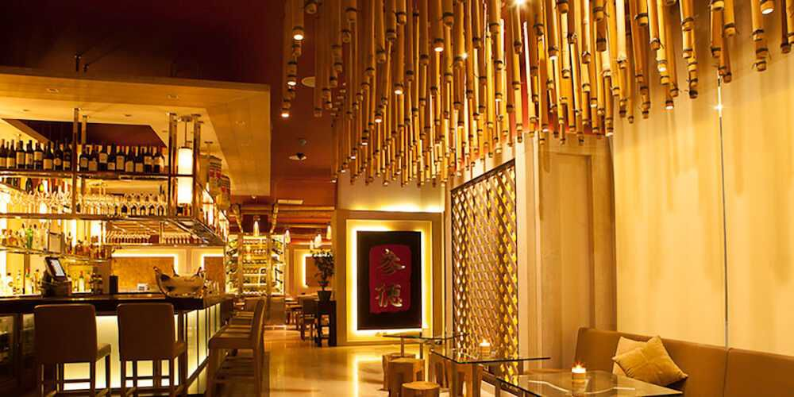

Poca casa

Poca Casa
is a spacious and really cool restaurant and lounge place that offers an environment for just relaxing and having a good time.
The decor is neat and air con is cool.
It's where cunlinary artistry meets unparalled taste.
Once inside poca casa you step into the ultimate heven of cool vibes and gastronic delight.
This sprawling , chic restaurant and lounge is not just a place ; it's an experince waiting to unfold.
Dive into a world of great food that's not just a treat for your taste buds but a celebration of flavours .
From sizzling starters to mouthwatering mains, each dish is a masterpice crafted for your indulgence.
Join the trendsetters and immerse yourself in an atmosphere where every moments is Insta-worthy.
Here are some intresting facts about the restaurant.
-
Unique Dinnig Experience : Poca casa offers a unique and immersive dinnig , experience, with a focus on creativity and experimentation.
- Asian-Inspaired Cuisine : The restaurant's causine is heavily influenced by asian flavors and techniques , combined with spanish ingredients abd techniques.
- Tasting Manues : Poca Casa offers a tasting manu that changes seasonally, with around 20-25 courses . The menu is designed to be journey of flavors and textures.
- Chef Dabiz Munoz : The chef and owner Dabiz Munoz, is known for his creative and innovative approach to cooking. He has been awarded many accolades, including Three Michelin Stars
- Flying Pig Theme : The restaurant has a flying pid theme throughout thr decor and dishes, which symbolizes the chef's ambition and success.
- Imitate Settings : The restaurant has a small imitate setting, with only 20 seats, which allows for a personalized and exclusive experience.
Service Options
- Dine In
- Take Away
- Delivery
Payment Options
- Credit cards
- NFC moblie payments
- Master cards
- Debit cards
- Mobile money